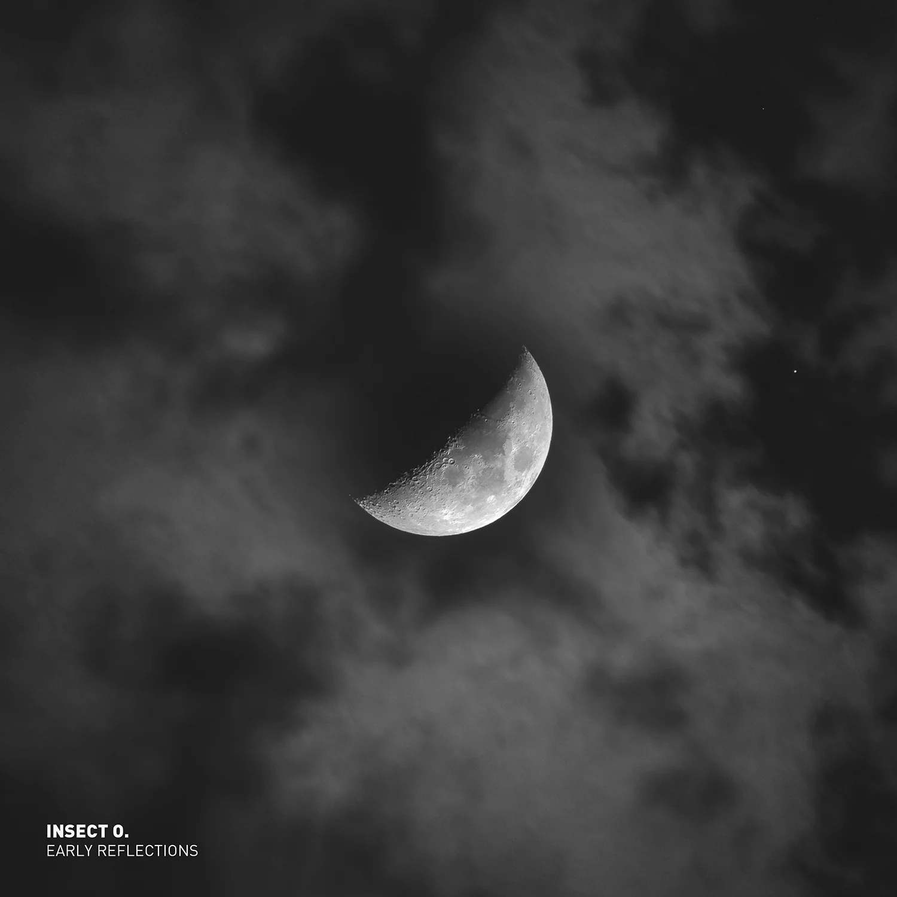

Early
Reflec
tions
out
Jan
2026

Early Reflections
This is a placeholder for the web audio player generated by javascript.
BUY
With Early Reflections, Oliver Hartmann opens the archives of his early work. The LP brings together eight techno tracks recorded under his moniker Insect O. between 2000 and 2003.
The recordings reveal an artist searching for his musical language – a language that begins to draw on various elements: the melancholy of dub techno, hypnotic effect of repetitive sounds and minimalist structures of techno.
the sound of early reflections
On Early Reflections, Insect O. built a sonic world using two key machines: the Access Virus A and the Novation Drumstation. This video explores how those two pieces of hardware shaped the emotional depth and mechanical pulse of the LP — from evolving Virus pads and saturated basslines to sharp 909-style drums programmed on the Drumstation. By limiting the setup to a focused hardware workflow, Insect O. crafted a cohesive, raw sound that defines Early Reflections.
Sunday Afternoon
On a quiet Sunday in January, Dresden was wrapped in snow. Ice drifted slowly across the Elbe as the sun set behind the city. I grabbed my camera and captured the peaceful mood of that moment — cold air, warm light, complete calm. This mood perfectly mirrors my track Sunday Afternoon, the closing piece of my album Early Reflections.
Reviews
-
FAZE Magazine
Situated between the analog groove of the Akai MPC2000 and digital FM synthesis, the album offers deep insights into Hartmann’s early work, which sounds as timeless today as it did back then. Minimalist structures, hypnotic repetition, and the warm essence of dub techno come together to form a journey through space and time that is as endless as it is immersive. (Faze Magazine 2026/03)
-
Undrtone UK
New York captures that search for language, where repetition becomes reflection, and the dancefloor becomes a space for thought as much as movement. read full review
-
Soaplife Magazine
What makes this release significant is its archival honesty. Insect O. treats early work as material to be presented, not polished into something it never was. That approach honors the original energy while positioning it usefully for now: as source material for new connection and communal immersion. read full review
-
Acidted Blog
There’s a smooth drifting sense to the track. It offers smatterings of acid. But it doesn’t take itself too seriously. For a techno track it unusually has a sense of light and joy. Really rather lovely. Chilled and yet also danceable. read full review